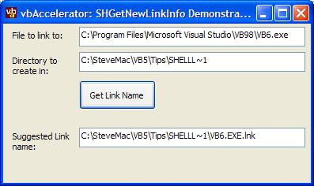

Shell Link Filename (13K)
Shell Link Filename (13K)
 23 Oct 2003
23 Oct 2003
First Posted

Getting the Correct Filename for a Shortcut
Demonstrates how to use the shell to get the suggested shortcut name, and provides a useful class for working with Strings in the API
If your application creates or otherwise manipulates shortcuts then you should use the Operating System to determine what the filename for the shortcut should be, as the extension is subject to i18n. This article demonstrates how to use the SHGetNewLinkInfo API call to do this, and also provides a handy class which can make working with ANSI and Unicode String API declares in the same code easier.
The SHGetNewLinkInfo API call
The declaration of this function in the Platform SDK is as follows:
BOOL SHGetNewLinkInfo(
LPCTSTR pszLinkTo,
LPCTSTR pszDir,
LPTSTR pszName,
BOOL *pfMustCopy,
UINT uFlags
);
The function takes two input strings, pszLinkTo and pszDir, which represent the file to link to and the directory to create the new link in respectively and one ouput string for the new link file name, pszName, which must be pre-initialised to hold the result. pfMustCopy is set to 1 if the shortcut you're creating is a link to another shortcut and hence can be simply copied, and uFlags specifies flags which control the function.
Note that the declare specifies TSTR string types. This implies that there are both ANSI and Unicode versions of the declares, and they take either an ANSI or Unicode string. Whilst VB's Declare keyword makes it (kind of) easy to work with ANSI strings, it does not help at all with Unicode ones. If you want to work with Unicode strings you need to either put the declare in a Type Library, or start manipulating the string memory directly. Either way is fairly complex to achieve, so in this sample I've included a class, cStringPointer which wraps some of this functionality up.
Manipulating Memory to Represent Strings
In memory there isn't much difference between an ANSI and a Unicode string. Both consist of a pointer to a block of memory which is at least terminated by a null character (\0). The Unicode block is simply twice the size of the ANSI equivalent. Creating a pointer to a memory area which represents either string is fairly straightforward using the Win32 memory block allocation APIs. However, getting the data in and out of the memory block as a string, and making sure the memory buffer is cleaned up correctly is a bit more tedious. For this reason, a class wrapper to the code is a sensible idea. Here's the code for cStringPointer:
Option Explicit
Private Declare Function LocalAlloc Lib "kernel32" ( _
ByVal wFlags As Long, ByVal wBytes As Long) As Long
Private Declare Function LocalFree Lib "kernel32" ( _
ByVal hMem As Long) As Long
Private Declare Function LocalLock Lib "kernel32" ( _
ByVal hMem As Long) As Long
Private Declare Function LocalUnlock Lib "kernel32" ( _
ByVal hMem As Long) As Long
Private Const GMEM_ZEROINIT = &H40
Private Const GMEM_FIXED = &H0
Private Const GPTR = (GMEM_FIXED Or GMEM_ZEROINIT)
Private Declare Sub CopyMemory Lib "kernel32" Alias "RtlMoveMemory" ( _
lpvDest As Any, lpvSource As Any, ByVal cbCopy As Long)
Private Declare Function lstrlenA Lib "kernel32" ( _
ByVal lpString As Long) As Long
Private Declare Function lstrlenW Lib "kernel32" ( _
ByVal lpString As Long) As Long
Private Declare Function GetVersion Lib "kernel32" () As Long
Private m_hMem As Long
Private m_lBufSize As Long
Private m_lPtr As Long
Public Sub SetString(ByVal sString As String)
Dispose
If (Len(sString) > 0) Then
Dim b() As Byte
If IsNt Then
b = sString
Else
b = StrConv(sString, vbFromUnicode)
End If
ReDim Preserve b(0 To UBound(b) + 1) As Byte
m_hMem = LocalAlloc(GPTR, UBound(b) + 1)
m_lPtr = LocalLock(m_hMem)
CopyMemory ByVal m_lPtr, b(0), UBound(b) + 1
Else
m_hMem = LocalAlloc(GPTR, 1)
m_lPtr = LocalLock(m_hMem)
End If
End Sub
Public Function GetString() As String
Dim sRet As String
If Not (m_lPtr = 0) Then
Dim b() As Byte
Dim lLen As Long
If IsNt Then
lLen = lstrlenW(m_lPtr) * 2
Else
lLen = lstrlenA(m_lPtr)
End If
If (lLen > 0) Then
ReDim b(0 To lLen) As Byte
CopyMemory b(0), ByVal m_lPtr, lLen
If IsNt Then
sRet = b
Else
sRet = StrConv(b, vbUnicode)
End If
Dim iPos As Long
iPos = InStr(sRet, vbNullChar)
If (iPos > 1) Then
GetString = Left(sRet, iPos - 1)
Else
GetString = sRet
End If
End If
End If
End Function
Public Property Get Ptr() As Long
Ptr = m_lPtr
End Property
Public Property Let Ptr(ByVal lPtr As Long)
Dispose
' This is pointer must be owned elsewhere
' so we have no hMem. No attempt to free
' this pointer will (or can) be made by
' this class
m_lPtr = lPtr
End Property
Private Function IsNt() As Boolean
Dim lVer As Long
lVer = GetVersion()
IsNt = ((lVer And &H80000000) = 0)
End Function
Public Sub Dispose()
If Not (m_hMem = 0) Then
If Not (m_lPtr = 0) Then
LocalUnlock m_lPtr
m_lPtr = 0
End If
LocalFree m_hMem
m_hMem = 0
End If
End Sub
Private Sub Class_Terminate()
Dispose
End Sub
As you can see, the class checks the Windows version: if it is NT then the string is held as Unicode, otherwise it is held as ANSI and VB's Unicode - ANSI conversions are invoked on the string. The class includes methods you can use to get or set the string from the buffer, as well as to either get the pointer to the string or to set the pointer to a new API string. The class also knows how to deallocate the memory, and also not to deallocate things it doesn't own (when the pointer has been externally set). Note that like VB, the "String" associated with the class is immutable: if you change the string then a new buffer is allocated.
With this available, we're in a position to make using the SHGetNewLinkInfo easier.
Unicode and ANSI Declares with cStringPointer
Rather than using String at all in the declares, all String parameters are set to ByVal Long:
Private Declare Function SHGetNewLinkInfoA Lib "shell32.dll" ( _
ByVal pszLinkTo As Long, _
ByVal pszDir As Long, _
ByVal pszName As Long, _
ByRef pfMustCopy As Long, _
ByVal uFlags As Long) As Long
Private Declare Function SHGetNewLinkInfoW Lib "shell32.dll" ( _
ByVal pszLinkTo As Long, _
ByVal pszDir As Long, _
ByVal pszName As Long, _
ByRef pfMustCopy As Long, _
ByVal uFlags As Long) As Long
Actually making the call becomes nice an easy:
Public Property Get NewLinkFilename( _
ByVal sFileToLinkTo As String, _
ByVal sLinkDirectory As String, _
Optional ByVal eLinkOptions As EShellLinkFilenameOptions = 0 _
) As String
Dim cLinkTo As New cStringPointer
Dim cLinkDir As New cStringPointer
Dim cFilename As New cStringPointer
Dim lCopyFlag As Long
Dim lR As Long
cLinkTo.SetString sFileToLinkTo
cLinkDir.SetString sLinkDirectory
cFilename.SetString String$(MAX_PATH, 0)
If (IsNt) Then
lR = SHGetNewLinkInfoW( _
cLinkTo.Ptr, cLinkDir.Ptr, cFilename.Ptr, _
lCopyFlag, eLinkOptions)
Else
lR = SHGetNewLinkInfoA( _
cLinkTo.Ptr, cLinkDir.Ptr, cFilename.Ptr, _
lCopyFlag, eLinkOptions)
End If
NewLinkFilename = cFilename.GetString()
End Property
I think you'll agree that that makes handling strings somewhat easier. Here we've accomplished calling a function that has both in and out string values, in both ANSI and Unicode, with only a handful of lines of code.
Conclusion
This article demonstrates how to obtain the correct filename for a new Shortcut using the Shell's API. The associated cStringPointer class used to perform this function may well prove useful in your projects too!